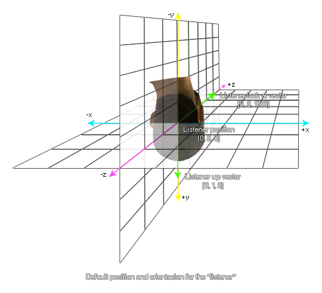
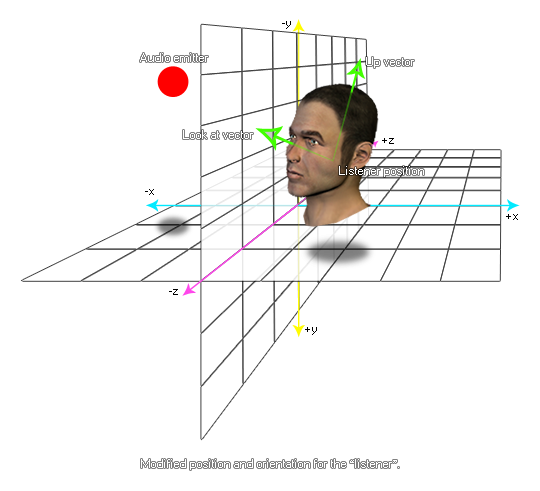

audio_listener_set_orientation(index, x, y, z);
| Argument | Description |
|---|---|
| index | The listener to get the data for (default 0). |
| lookat_x | The x look vector (default 0). |
| lookat_y | The y look vector (default 0). |
| lookat_z | The z look vector (default 1000). |
| up_x | The x up vector (default 0). |
| up_y | The y up vector (default 1). |
| up_z | The z up vector (default 0). |
Returns: N/A
With this function you can change the orientation of the given
listener within the 3D audio space. The default listener
index is 0, but you can use the function audio_get_listener_info
to get the different indices available for the target platform.
The look at direction and up direction are based on
the vectors that are resolved from the given relative x, y and z
positions (for more information on vectors, please see Maths - Vectors),
and default to (0, 0, 1000) for the look at direction and (0, 1, 0)
for the up direction, as shown in the illustration below:
 Changing the
given listener orientation with this function will change how sound
created by audio emitters around the game room are perceived by the
player of your game. In the example below, sounds created by the
emitter when the listener is at the default position would appear
to be coming from below and to the right of the listener, but with
the new position and orientation of the listener they will now be
perceived as coming from above and to the right. 
var num = audio_get_listener_count();
for(var i = 0; i < num; ++i;)
{
var info = audio_get_listener_info(i);
var data = audio_listener_get_data(info[?
"index"]);
if data[? "up_x"] != 0
{
audio_listener_set_orientation(info[?
"index"], 0, 0, 1000, 0, 1, 0);
}
ds_map_destroy(info);
ds_map_destroy(data);
}
The above code checks the number of listeners available then loops through them and if their up_x orientation is not 0, it sets all their orientation values to default ones.